k-Day 182｜現代商隊
又回到剛出發時日本的溫度6–16°C。
五點多就醒了，昨晚睡得不好。很想上廁所，然而右邊是綿延不盡的卡車，左邊是整排貨櫃商店和餐廳。
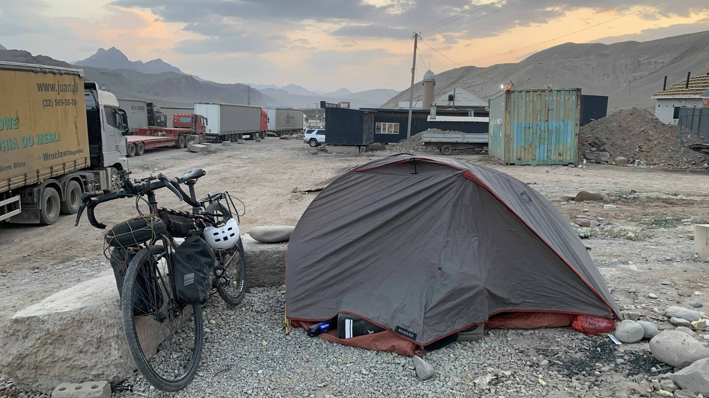
一直撐到六點半日出，羽絨衣、毛衣和防風外套全都穿上身。外面的風大又冷。
卡車們真的是二十四小時不間斷地過境，照片左邊的黃色貨櫃印的是波蘭地名。昨天只關注車牌，沒想到車上的貨櫃竟來自那麼遠的歐洲。
早上七點收拾好所有裝備，帶著一點預感伸手捏捏前輪，果然軟得像牛番茄……到餐廳吃個東西撫平受創的心靈。
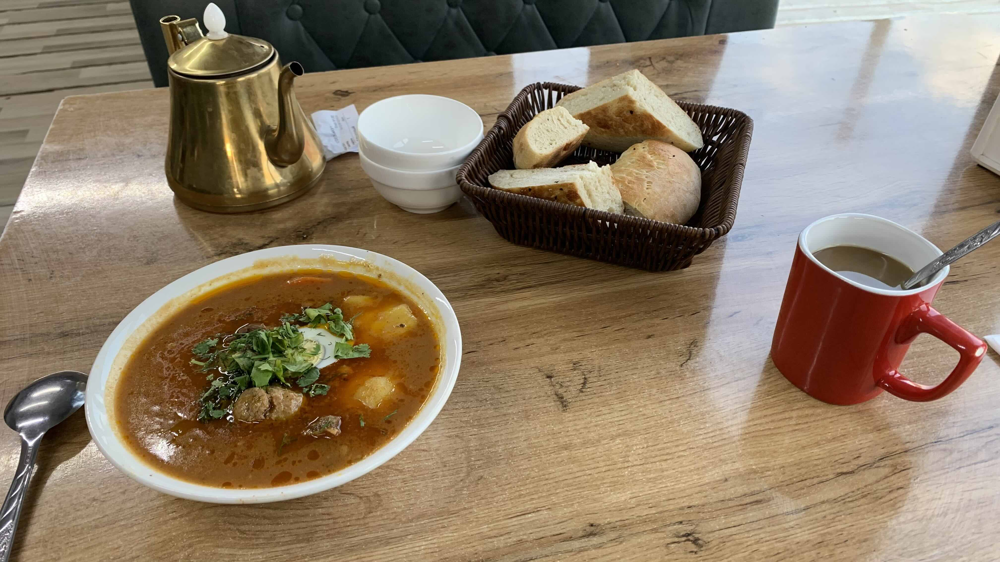
點了一碗馬鈴薯胡蘿蔔燉牛肉湯，非常濃郁的口感。裡面有一顆牛絞肉丸，一大塊瘦肉，四小塊肥瘦相間燉得軟嫩的肉。大塊的瘦肉有點過頭，整體相當好吃。麵包是附贈的，咖啡50元。
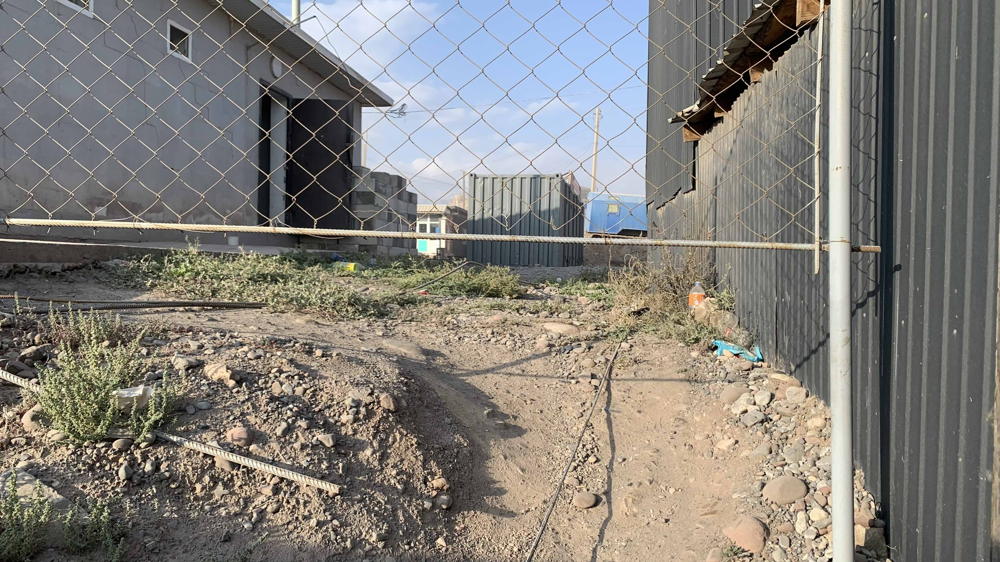
吃完早餐詢問店員廁所在哪裡呢？鑽過鐵網後面那間灰色建築就是了。
雖然預料到會是戶外旱廁，那場景說是地獄也不為過。本該是凹陷的坑洞已成為凸起的山，一帶一路的卡車司機們都將部分的自己遺留在這裡。
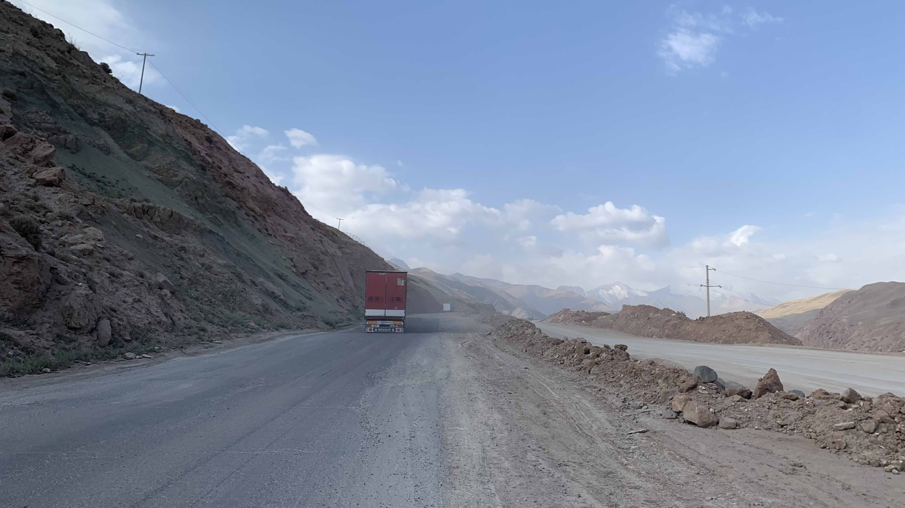
先幫前輪打一點氣，牽著車遠離口岸周邊的惡劣環境。
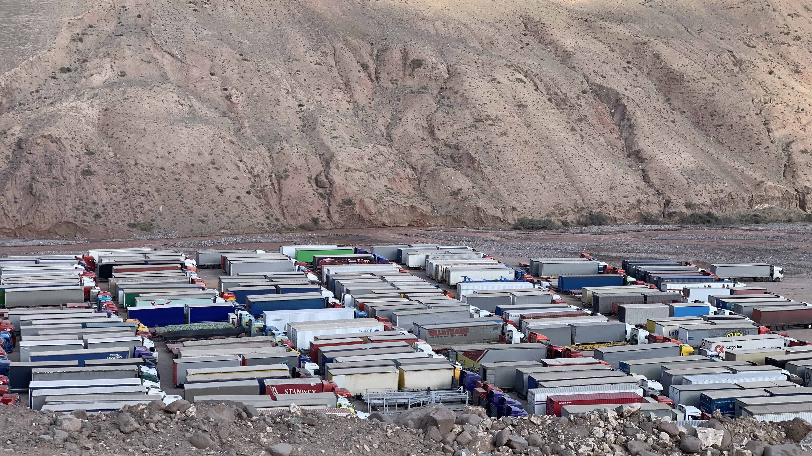
山谷下排滿等待過境的卡車。
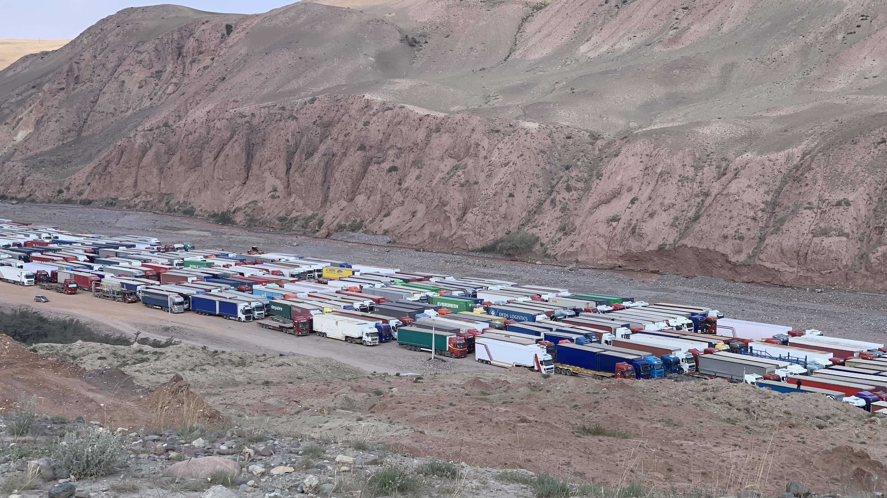
今早路過的卡車大多是往中國去的，車上的貨櫃印著各國公司的標誌，除了中亞五國，還看到了挪威、義大利、波蘭等歐洲國家。昨天從中國方向過來的還有韓國的吊車，應該是訂購後經由中國陸路運送過來的。
這就是現代商隊吧！我真的走在絲路上啊！
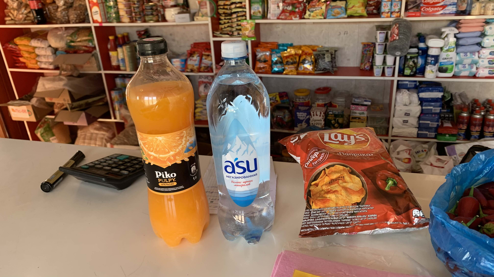
回到昨天的商店買了水、果汁和薯片，總共430元。對於索姆和台幣匯率還沒有概念。
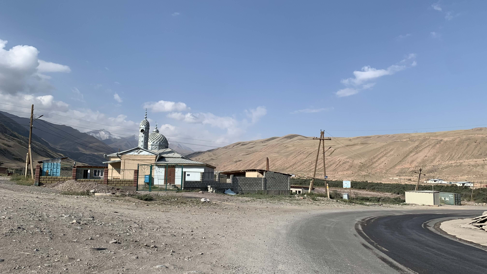
從口岸到山頂有32公里的連續上坡路段，海拔從2850公尺升到3768公尺。然而昨天過境時走了太多路，兩隻小腿都在腫脹抽搐，決定牽著車到地圖上前人標記的露營點休息一天。
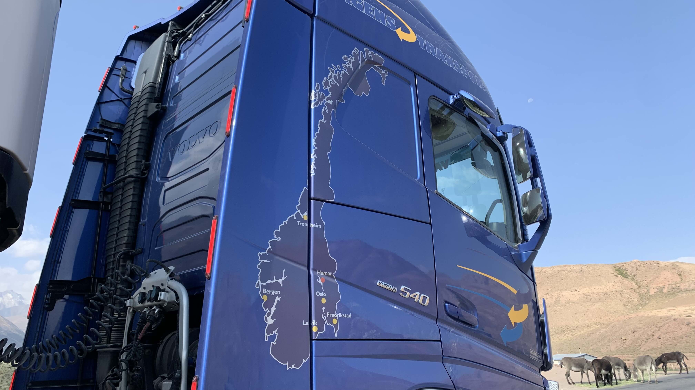
沒在開玩笑，從口岸到山頂，幾乎一路都是這樣的陡坡，卡車交會時幾乎沒有多餘的空間。為了不擋道，大部分時間都走在佈滿金屬垃圾和碎玻璃的土路上推車。
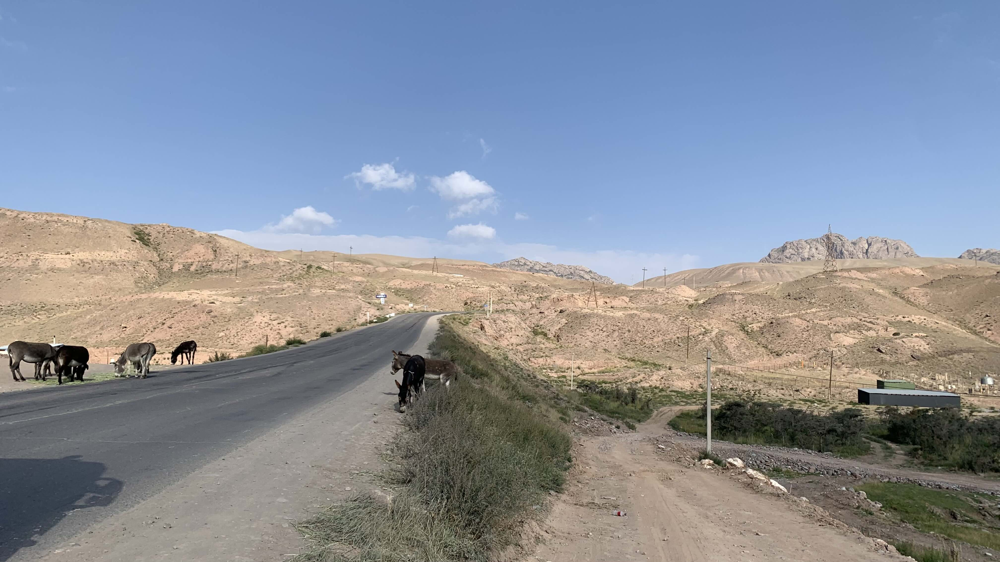
有輛卡車經過時和我打了招呼，我也揮揮手。不料司機立刻將車停靠在路邊，下車後看了看二十三號，又回頭檢查卡車的縫隙，似乎想連人帶車把我拉上山。
在他招手讓我過去時趕緊搖搖手，司機露出「原來不是要上車的嗎？」的表情。
真是抱歉，不過車門的地圖是挪威還是得拍下來留念的。
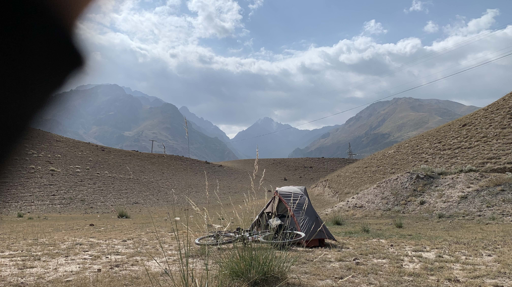
前人推薦的露營點就在上坡的轉彎處，跟著車轍往山坡方向走，有一片被山坡包圍的草坪，中間有塊大石頭。石頭四周當然是佈滿碎玻璃和空酒瓶的，因此將帳篷搭在較遠的角落。
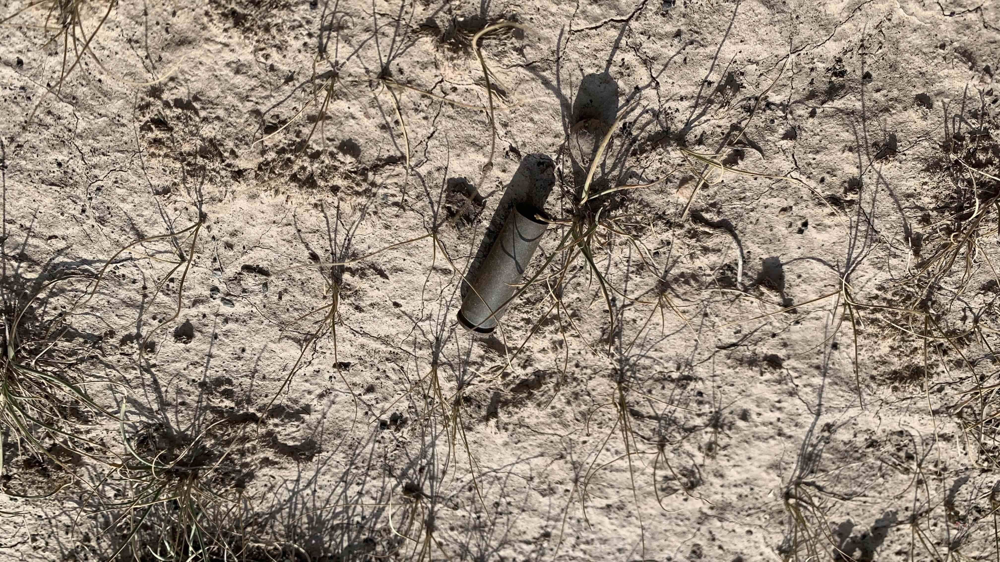
清理地上的玻璃和鐵絲，發現這樣的金屬物。
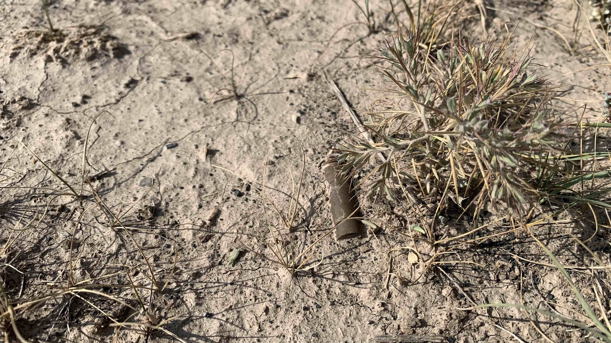
地上有好多呢。
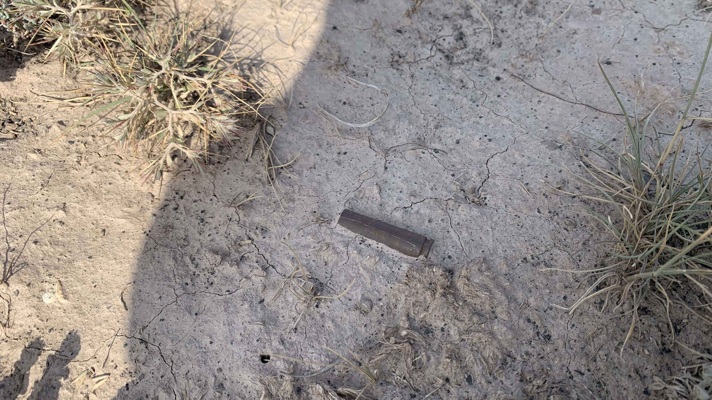
是什麼樣的產品呢？
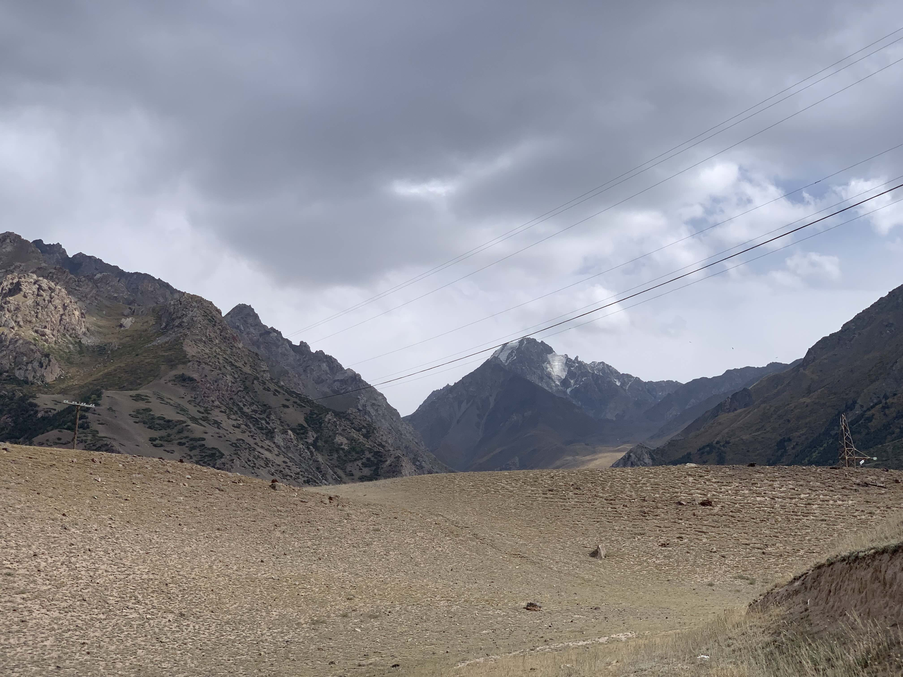
背後的山頂已經積雪了，實在沒預料到一過口岸就是如此景象。
今日花費：早餐 400 咖啡 50、水+果汁+樂事 430元